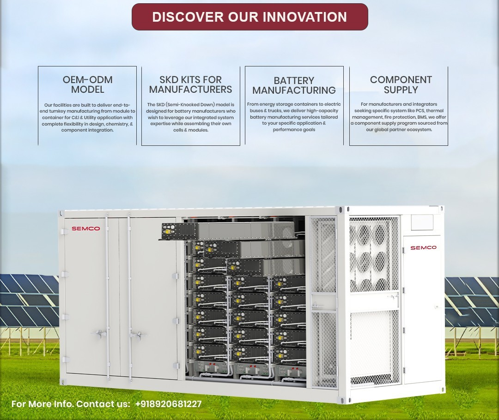
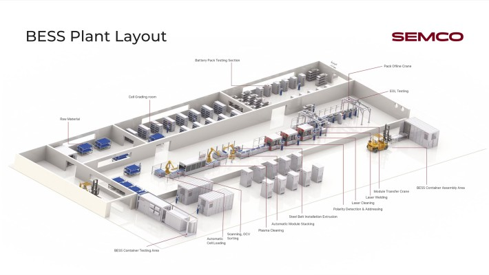
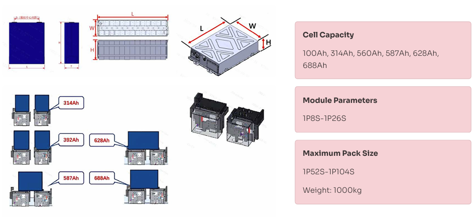
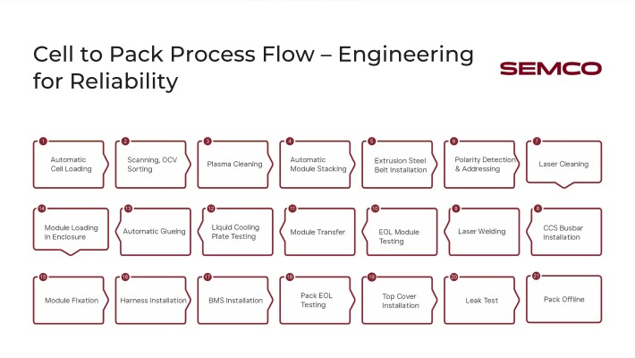
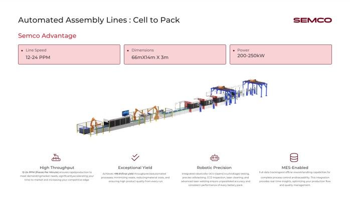
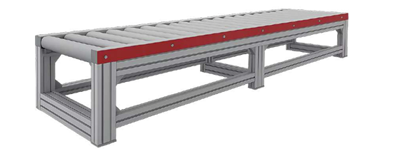
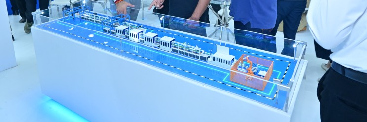

Why “containerized energy storage” is the new default
Energy storage is moving from “pilot projects” to mission-critical infrastructure—supporting renewable integration, peak-shaving, tariff optimization, grid balancing, and backup reliability for industries. In this shift, containerized Battery Energy Storage Systems (BESS) have become the preferred deployment model because they are:
- Fast to deploy (factory-built + site-ready)
- Scalable (add containers as capacity grows)
- Standardized (repeatable quality + predictable performance)
- Easier to operate (integrated controls, safety systems, and monitoring)

But here’s the real challenge: a container is not just a box with batteries. It’s a complete engineered product that must deliver electrical performance, thermal stability, safety compliance, and high uptime—across harsh site conditions and demanding duty cycles.
This is where Semco Infratech’s turnkey approach becomes a strategic advantage.
What “Turnkey” really means in a new energy storage container system
A turnkey container system should solve five things simultaneously:
- Engineering correctness (electrical + mechanical + thermal)
- Manufacturing repeatability (every unit meets the same standard)
- Quality assurance (testability + traceability)
- Safety by design (prevention + detection + mitigation)
- Operations readiness (monitoring, serviceability, spares planning)

Semco Infratech delivers turnkey from concept to commissioning—so customers don’t have to coordinate multiple vendors for container fabrication, battery integration, PCS interfacing, BMS logic, HVAC sizing, safety standards, and testing.
The Complete Assembly Ecosystem
Modern automatic BESS assembly lines represent a paradigm shift in how battery energy storage systems are manufactured. Rather than treating assembly as isolated, disconnected processes, contemporary automation solutions integrate 21 sequential operations from initial cell loading through final pack validation, creating what industry experts term a "cell-to-container solution." This comprehensive approach eliminates bottlenecks, ensures traceability, and establishes consistent quality standards throughout the production workflow.
The architecture of such systems typically encompasses distinct operational zones: a cell grading room for initial testing and sorting, a module assembly area featuring robotic precision systems, a battery pack testing section with advanced diagnostic capabilities, and a containerized BESS assembly area that integrates complete packs into deployment-ready units.

End-to-End Assembly Solutions Across Scales and Cell Formats
Semco offers one of the industry’s most comprehensive lithium battery assembly portfolios, supporting:
Production Scales
- Manual lines for R&D and pilot batches
- Semi-automatic lines for mid-volume manufacturing
- Fully automatic lines for high-throughput, industrial-scale production
Cell Types
- Prismatic cells
- Cylindrical formats (18650, 21700, 4680)
- Pouch cells

Configurability
- Module configurations from 1P8S to 1P26S
- Pack configurations up to 1P104S
- Cell capacities from 100Ah to 688Ah
- Air-cooled and liquid-cooled pack architectures
This flexibility ensures compatibility across EV, BESS, telecom, and stationary storage applications.
Precision-Driven Module and Pack Assembly
Module Assembly Line
The module assembly process integrates:
- Automated cell loading and OCV verification
- Plasma and laser cleaning for contamination-free bonding
- Precision stacking, compression, and busbar integration
- Laser welding with CCD-based inspection
- End-of-line (EOL) testing to ensure compliance and reliability

Pack Assembly Line
Pack assembly includes:
- Cooling plate testing and integration
- Adhesive dispensing and module placement
- Harness and BMS installation
- Air-tightness testing
- Comprehensive EOL validation
Each step is engineered to maximize consistency, safety, and yield while minimizing manual intervention.
Automatic BESS Pack Assembly Lines for Utility-Scale Storage
Our automated assembly redefines efficiency and precision in Energy Storage System (ESS) assembly. Designed for high volume production, it ensures exceptional throughput and superior yield rates through advanced automation and real time monitoring. This cutting-edge solution is engineered to meet the rigorous demands of modern energy storage manufacturing, enabling scalable production with unparalleled consistency and reliability for next-generation battery packs.
For large-format energy storage systems, Semco delivers fully automated BESS pack assembly lines designed for continuous, high-volume production.

Key specifications include:
- Line speed: 12–15 packs per minute
- Yield: >99.5% final yield
- Power requirement: 250–350 kW
- Applications: Utility grid BESS, C&I ESS, residential storage
Integrated robotics handle OCV testing, stacking, laser welding, and inspection, while MES integration ensures complete digital traceability across production cycles.
Industry-First Innovations: Powered Roller Conveyor System
Semco has introduced the industry’s first patented block-design powered roller conveyor, replacing traditional chain-based systems.
The Problem with Conventional Chain Conveyor Systems: High mechanical complexity → frequent breakdowns, High maintenance costs and downtime, Limited adaptability for future upgrades and Prone to wear and tear under continuous industrial loads.

Benefits include:
- Near-zero maintenance
- 99%+ operational uptime
- Lower total cost of ownership
- High durability under 24×7 production loads
- Seamless MES and automation compatibility
Why It’s a Game-Changer:
- First-of-its-kind in the industry – no other supplier offers this
- Operational reliability: 99%+ uptime in production use
- Lower Total Cost of Ownership (TCO) over the conveyor’s lifespan
- Fully compatible with MES integration and automation systems
- Proven at scale in India’s largest battery production environments
Containerization and Final Deployment Preparation
The culmination involves pack offline utilities, where completed packs integrate into containerized BESS systems. BESS container testing represents final validation, conducting full-scale charge-discharge cycles, thermal stress testing, and safety verification under simulated grid conditions. This comprehensive containerized system validation ensures readiness for immediate deployment into stationary energy storage applications.

Key Highlights:
- Automated Pack Handling: Reduces manual intervention, improves efficiency
- High Efficiency: Capable of loading multiple containers in one work shift
- Flexible Configurations: Suitable for all containers and cabinet types
- Multiple Operation Modes: Options for fully automatic and semi-automatic setups
- Integrated with Line Flow: Designed as the final stage of the ESS pack production line
This ensures faster deployment readiness and reduces manual handling risks.
BESS Container Loading System: Engineered for Scale
Semco Infratech’s Container Loading System is designed as the final, fully integrated stage of the ESS pack production line, enabling safe, automated, and repeatable loading of battery packs into BESS containers.

- Pack Transfer Car: Moves completed packs from the assembly line to the container interface—no forklifts, no manual handling.
- Guided Loading Rails & Fixtures: Ensures accurate alignment and positioning, preventing installation errors.
- XYZ Gantry / Lifting Module: Handles heavy packs with controlled, stable motion for maximum safety.
- Securing & Positioning System: Locks packs in place to withstand transport, installation, and long-term operation.
Industry Impact and National Significance
In India's context, automatic BESS assembly lines directly support the nation's ambitious renewable energy and grid modernization objectives. These systems enable domestic manufacturers to achieve the production scales, quality consistency, and manufacturing costs required to compete in both domestic and export markets. Companies deploying such technology position themselves to capture growing demand from utility-scale solar installations, industrial backup systems, and grid-stabilization initiatives aligned with India's renewable energy targets.

Know More About Semco Infratech's BESS Assembly Solutions
Explore how Semco Infratech's automatic BESS assembly lines can transform your battery manufacturing operations. The company offers comprehensive solutions tailored to your production scale—from startup R&D operations to full commercial manufacturing volumes. Semco's integrated approach combines state-of-the-art equipment, intelligent process management, and expert technical support to establish efficient, scalable battery production capabilities.
Contact Semco Infratech to discuss your BESS manufacturing requirements and discover how automatic assembly solutions can enhance your production efficiency, ensure product quality, and accelerate your path to market competitiveness.
For demos, solutions, or collaborations:
Connect at sales@semcoindia.com | +91-8920681227 | www.semcoinfratech.com
Learn about:
- Complete cell-to-container assembly line solutions
- Customized line design and implementation support
- Advanced testing and quality assurance systems
- Training and post-installation technical support
- Scalable solutions for your production volumes
Take the next step toward manufacturing excellence with Semco Infratech—India's trusted partner for automatic BESS assembly solutions.